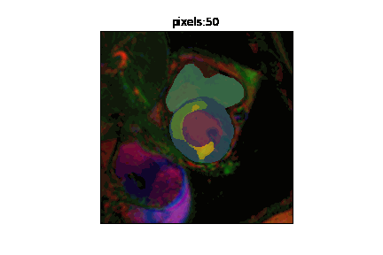

from fastai.vision.all import *
from fastai.vision.models import resnet34
import warnings
warnings.filterwarnings('ignore')Case Study: MyoPS - myocardial pathology segmentation
Aim: Apply to MyoPS data
This is a more complex application of misas to a multi-channel input model with multiple output classes. It uses data from the Myocardial pathology segmentation combining multi-sequence CMR challenge (MyoPS 2020).
General results are published in “Myocardial Pathology Segmentation Combining Multi-Sequence Cardiac Magnetic Resonance Images.” First Challenge, MyoPS 2020, Held in Conjunction with MICCAI 2020, Lima, Peru, October 4, 2020, Proceedings and the specific model is described in > Ankenbrand M.J., Lohr D., Schreiber L.M. (2020) “Exploring Ensemble Applications for Multi-sequence Myocardial Pathology Segmentation.” In: Zhuang X., Li L. (eds) Myocardial Pathology Segmentation Combining Multi-Sequence Cardiac Magnetic Resonance Images. MyoPS 2020. Lecture Notes in Computer Science, vol 12554. Springer, Cham.
supplemented by https://github.com/chfc-cmi/miccai2020-myops
Warning
As this model uses a specific development version of fastai v2 and data from the challenge can not be freely shared it is much harder to reproduce the results from this notebook. You need to request the data from the challenge website, download the model from zenodo
 and install the specific versions of packages listed at the bottom of the page (other versions might work too but are untested).
and install the specific versions of packages listed at the bottom of the page (other versions might work too but are untested).
Prepare Model for misas
class AddMaskCodeMapping(Transform):
"Add mapping of pixel value to class for a `TensorMask`"
def __init__(self, mapping, codes=None):
#print("init")
self.mapping = mapping
self.codes = codes
if codes is not None: self.vocab,self.c = codes,len(codes)
def encodes(self, o:PILMask):
#print("encodes")
mo = ToTensor()(o)
mo = mo.to(dtype=torch.long)
mo = self.mapping.index_select(0,mo.flatten()).reshape(*mo.shape)
mo = PILMask.create(mo.to(dtype=torch.uint8))
return mo
def decodes(self, o:TensorMask):
# decoding of inputs works out of the box, but get_preds are not properly decoded
if len(o.shape) > 2:
o = o.argmax(dim=0)
if self.codes is not None: o._meta = {'codes': self.codes}
return odef MappedMaskBlock(mapping,codes=None):
"A `TransformBlock` for segmentation masks, with mapping of pixel values to classes, potentially with `codes`"
return TransformBlock(type_tfms=PILMask.create, item_tfms=AddMaskCodeMapping(mapping=mapping,codes=codes), batch_tfms=IntToFloatTensor)def getMappedMaskBlock(predefined_mapping_name):
predefined_mappings = {
'full': ([0,1,2,3,4,5],['bg','lv','my','rv','ed','sc']),
'edOnly': ([0,0,0,0,1,0],['bg','ed']),
'edScCombined': ([0,0,0,0,1,1],['bg','edSc']),
'scOnly': ([0,0,0,0,0,1],['bg','sc']),
'edScOnly': ([0,0,0,0,1,2],['bg','ed','sc']),
}
mapping,codes = predefined_mappings[predefined_mapping_name]
return MappedMaskBlock(mapping = torch.LongTensor(mapping), codes=codes)def get_train_files(path):
items = get_image_files(path)
items = L([x for x in items if x.name.startswith("1")])
return itemsdef getMyopsDls(mapping_name="full", images="images", path="/storage/biomeds/data/myops/"):
mmb = getMappedMaskBlock(mapping_name)
myopsData = DataBlock(blocks=(ImageBlock, mmb),#['bg','lv','my','rv','ed','sc'])),
get_items=get_train_files,
splitter=FuncSplitter(lambda o: False),
get_y=lambda o: str(o).replace(images,"masks"),
item_tfms=CropPad(256),
batch_tfms=aug_transforms(max_rotate=90,pad_mode="zeros"))
dls = myopsData.dataloaders(f'{path}/{images}',num_workers=4,batch_size=12)
dls[1].bs = 12
return dlsdef multi_dice(input:Tensor, targs:Tensor, class_id=0, inverse=False)->Tensor:
n = targs.shape[0]
input = input.argmax(dim=1).view(n,-1)
# replace all with class_id with 1 all else with 0 to have binary case
output = (input == class_id).float()
# same for targs
targs = (targs.view(n,-1) == class_id).float()
if inverse:
output = 1 - output
targs = 1 - targs
intersect = (output * targs).sum(dim=1).float()
union = (output+targs).sum(dim=1).float()
res = 2. * intersect / union
res[torch.isnan(res)] = 1
return res.mean()
def diceFG(input, targs): return multi_dice(input,targs,class_id=1)
def diceLV(input, targs): return multi_dice(input,targs,class_id=1)
def diceMY(input, targs): return multi_dice(input,targs,class_id=2)
def diceRV(input, targs): return multi_dice(input,targs,class_id=3)
def diceEd(input, targs): return multi_dice(input,targs,class_id=4)
def diceSc(input, targs): return multi_dice(input,targs,class_id=5)
dices = [diceLV,diceMY,diceRV,diceEd,diceSc]getMyopsDls("full", "images")<fastai.data.core.DataLoaders>learn = unet_learner(
getMyopsDls("full", "images"),
resnet34
)[W NNPACK.cpp:51] Could not initialize NNPACK! Reason: Unsupported hardware.Prepare Dataset for misas
Data is available as png images and masks which is just fine for misas
from misas.core import default_cmap
from PIL import ImageOpsimg = lambda: Image.open("101-orig-4.png").convert("RGB")
trueMask = lambda: Image.open("101-orig-4.png").convert("I")
plt.imshow(img())
plt.imshow(np.array(trueMask()), cmap=default_cmap)<matplotlib.image.AxesImage>class Fastai2_model:
def __init__(self, learner):
self.trainedModel = learner
def prepareSize(self, item): #, asPIL=False):
to_cut_w=((item.size[0]-256)/2)
to_cut_h=((item.size[1]-256)/2)
image = ImageOps.crop(item, (np.floor(to_cut_w), np.floor(to_cut_h), np.ceil(to_cut_w), np.ceil(to_cut_h)))
return image
def predict(self, image):
image = self.prepareSize(image)#, #asPIL=True)
image = PILImage.create(np.array(image))
with self.trainedModel.no_bar():
mask = self.trainedModel.predict(image)[0]#(pilimg) #mask,probs,rest
output = Image.fromarray(np.array(mask).astype(np.uint8))
return output #mask, probsmodel = Fastai2_model(learn.load("../../Downloads/multi_ce_full"))How does the trained model perform on this (training) example?
#Time to apply the model to the example image and see how it works (we need to call prepareSize manually here):
from misas.core import *
from misas.core import default_cmapmodel.prepareSize(img())plt.imshow(np.array(model.prepareSize(trueMask())))<matplotlib.image.AxesImage>mask = model.predict(img())
plt.imshow(np.array(mask))<matplotlib.image.AxesImage>fig,ax = plt.subplots(figsize=(4.5,4.5))
plt.imshow(model.prepareSize(img()))
plt.imshow(mask, cmap=default_cmap)<matplotlib.image.AxesImage>fig,ax = plt.subplots(figsize=(4.5,4.5))
plt.imshow(model.prepareSize(img()))
plt.imshow(np.array(model.prepareSize((trueMask()))), cmap=default_cmap)<matplotlib.image.AxesImage>Robustness to basic transformations
#img = lambda: open_image(files[0]).resize(256)
#trueMask = lambda: open_mask(files[0].replace("image","mask"))Sensitivity to orientation
Changes in orientation are very common. Not because it is common to acquire images in different orientation but because the way data is stored in different file formats like nifti and dicom differs. So it is interesting to see how the model works in all possible orientations (including flips).
dihed = get_dihedral_series(img(),model)
plot_series(dihed, nrow=2, figsize=(20,12))#plt.imshow(np.array(dihed [0][2].convert ("I")))
#dihed[0][1]Sensitivity to rotation
Let’s get an impression of how quickly segmentation performance decreases with deviations in rotation.
plot_series(get_rotation_series(img(),model, step=30), nrow=2, param_name="deg")plot_series(get_rotation_series(img(),model, step=60), nrow=1, param_name="deg")results = eval_rotation_series(img(),trueMask(),model,start=-180,end=180,components=["bg","LV","MY","RV","edema","scar"])import altair as alt(alt
.Chart(results.melt(id_vars=['deg'],value_vars=['LV','MY','RV','edema','scar']))
.mark_line()
.encode(
x="deg",
y="value",
color="variable",
tooltip="value"
)
.properties(width=700,height=300)
.interactive()
)So the range where prediction performance remains stable is quite large for most classes. However the rarer pathology classes scar and particularly edema react much more sensitively to rotation.
gif_series(
get_rotation_series(img(),model, start=0, end=360,step=10),
"example/myops/rotation.gif",
param_name="deg",
duration=400
)
Sensitivity to cropping
Another variation that might occur in real life is a difference in field of view. This can happen due to different settings when acquiring the images or due to pre-processing steps in an analysis pipeline.
plot_series(get_crop_series(img(),model, start = 50, end = 230, step = 10, finalSize=400), nrow=2, vmax=5)
plot_series(get_crop_series(img(),model, start = 80, end = 230, step = 20, finalSize=400), nrow=1, vmax=5)gif_series(
get_crop_series(img(),model, start=50, end=250,step=10),
"example/myops/crop.gif",
param_name="pixels",
duration=400,
vmax=5
)
It seems to be okay to crop the image to some extend. But performance degrades even before we start to crop part of the heart.
results = eval_crop_series(img(),trueMask(),model,start = 50, end=256, finalSize=400, components=["bg","LV","MY","RV","edema","scar"])(alt
.Chart(results.melt(id_vars=['pixels'],value_vars=['LV','MY','RV','edema','scar']))
.mark_line()
.encode(
x="pixels",
y="value",
color="variable",
tooltip="value"
)
.properties(width=700,height=300)
.interactive()
)Sensitivity to brightness
plot_series(get_brightness_series(img(),model), nrow=1) #end = 0.99, step = 0.18results = eval_bright_series(img(),trueMask(),model, components=["bg","LV","MY","RV","edema","scar"])(alt
.Chart(results.melt(id_vars=['brightness'],value_vars=['LV','MY','RV','edema','scar']))
.mark_line()
.encode(
x="brightness",
y="value",
color="variable",
tooltip="value"
)
.properties(width=700,height=300)
.interactive()
)Sensitivity to contrast
plot_series(get_contrast_series(img(),model), nrow = 1, vmax=5) #start=0.1, end=3, step=0.5results = eval_contrast_series(img(),trueMask(),model, components=["bg","LV","MY","RV","edema","scar"]) #end = 2.5, step = 0.3(alt
.Chart(results.melt(id_vars=['contrast'],value_vars=['LV','MY','RV','edema','scar']))
.mark_line()
.encode(
x="contrast",
y="value",
color="variable",
tooltip="value"
)
.properties(width=700,height=300)
.interactive()
)Sensitivity to zoom
plot_series(get_zoom_series(img(),model), param_name="zoom", nrow=2, vmax=5) #start=160,end=750,step=60, finalSize=480)
plot_series(get_zoom_series(img(),model), param_name="zoom", nrow=1, vmax=5)#,start=160,end=770,step=120, finalSize=480)results = eval_zoom_series(img(),trueMask(),model,components=["bg","LV","MY","RV","edema","scar"]) #,start=160,end=900,step=20,finalSize=480(alt
.Chart(results.melt(id_vars=['scale'],value_vars=['LV','MY','RV','edema','scar']))
.mark_line()
.encode(
x="scale",
y="value",
color="variable",
tooltip="value"
)
.properties(width=700,height=300)
.interactive()
)gif_series(
get_zoom_series(img(),model) , #start=50, end=900,step=50
"example/myops/zoom.gif",
param_name="scale",
duration=400,
vmax=5
)IDEA: Channel imbalance transformation For multi-channel images it might be useful to consider transformations that work differently on different channels.
Robustness to MR artifacts
It would be nice to analyze the effect of MR artifacts. However, we are dealing with multi-channel images here. Each channel is a separate MR image. So it is not obvious how to deal with this.
Package Versions
# packages in environment at /opt/conda/envs/misas:
#
# Name Version Build Channel
_libgcc_mutex 0.1 conda_forge conda-forge
_openmp_mutex 4.5 1_gnu conda-forge
absl-py 0.11.0 pypi_0 pypi
altair 4.1.0 pypi_0 pypi
argon2-cffi 20.1.0 pypi_0 pypi
astunparse 1.6.3 pypi_0 pypi
async-generator 1.10 pypi_0 pypi
attrs 20.3.0 pypi_0 pypi
backcall 0.2.0 pypi_0 pypi
beautifulsoup4 4.9.3 pypi_0 pypi
bleach 3.2.1 pypi_0 pypi
blis 0.7.4 pypi_0 pypi
bottleneck 1.3.2 pypi_0 pypi
ca-certificates 2020.12.5 ha878542_0 conda-forge
cachetools 4.2.0 pypi_0 pypi
catalogue 1.0.0 pypi_0 pypi
certifi 2020.12.5 py36h5fab9bb_0 conda-forge
cffi 1.14.4 pypi_0 pypi
chardet 4.0.0 pypi_0 pypi
click 7.1.2 pypi_0 pypi
contextvars 2.4 pypi_0 pypi
cycler 0.10.0 pypi_0 pypi
cymem 2.0.5 pypi_0 pypi
dataclasses 0.8 pypi_0 pypi
decorator 4.4.2 pypi_0 pypi
defusedxml 0.6.0 pypi_0 pypi
entrypoints 0.3 pypi_0 pypi
fastai 1.0.61 pypi_0 pypi
fastai2 0.0.30 pypi_0 pypi
fastcore 1.0.0 pypi_0 pypi
fastinference 0.0.35 pypi_0 pypi
fastprogress 1.0.0 pypi_0 pypi
fastscript 1.0.0 pypi_0 pypi
flatbuffers 1.12 pypi_0 pypi
future 0.18.2 pypi_0 pypi
gast 0.3.3 pypi_0 pypi
gif 2.0.0 pypi_0 pypi
google-auth 1.24.0 pypi_0 pypi
google-auth-oauthlib 0.4.2 pypi_0 pypi
google-pasta 0.2.0 pypi_0 pypi
grpcio 1.32.0 pypi_0 pypi
h5py 2.10.0 pypi_0 pypi
humanize 3.2.0 pypi_0 pypi
idna 2.10 pypi_0 pypi
imageio 2.9.0 pypi_0 pypi
immutables 0.14 pypi_0 pypi
importlib-metadata 3.3.0 pypi_0 pypi
ipykernel 5.4.2 pypi_0 pypi
ipython 7.16.1 pypi_0 pypi
ipython-genutils 0.2.0 pypi_0 pypi
ipywidgets 7.6.2 pypi_0 pypi
jedi 0.18.0 pypi_0 pypi
jinja2 2.11.2 pypi_0 pypi
joblib 1.0.0 pypi_0 pypi
jsonschema 3.2.0 pypi_0 pypi
jupyter 1.0.0 pypi_0 pypi
jupyter-client 6.1.7 pypi_0 pypi
jupyter-console 6.2.0 pypi_0 pypi
jupyter-core 4.7.0 pypi_0 pypi
jupyterlab-pygments 0.1.2 pypi_0 pypi
jupyterlab-widgets 1.0.0 pypi_0 pypi
keras-preprocessing 1.1.2 pypi_0 pypi
kiwisolver 1.3.1 pypi_0 pypi
kornia 0.2.2 pypi_0 pypi
libgcc-ng 9.3.0 h5dbcf3e_17 conda-forge
libgomp 9.3.0 h5dbcf3e_17 conda-forge
markdown 3.3.3 pypi_0 pypi
markupsafe 1.1.1 pypi_0 pypi
matplotlib 3.3.3 pypi_0 pypi
misas 0.0.3 dev_0 <develop>
mistune 0.8.4 pypi_0 pypi
murmurhash 1.0.5 pypi_0 pypi
nbclient 0.5.1 pypi_0 pypi
nbconvert 6.0.7 pypi_0 pypi
nbdev 1.0.10 pypi_0 pypi
nbformat 5.0.8 pypi_0 pypi
ncurses 5.9 10 conda-forge
nest-asyncio 1.4.3 pypi_0 pypi
networkx 2.5 pypi_0 pypi
nibabel 3.2.1 pypi_0 pypi
notebook 6.1.6 pypi_0 pypi
numexpr 2.7.2 pypi_0 pypi
numpy 1.19.4 pypi_0 pypi
nvidia-ml-py3 7.352.0 pypi_0 pypi
oauthlib 3.1.0 pypi_0 pypi
onnxruntime 1.6.0 pypi_0 pypi
openssl 1.0.2u h516909a_0 conda-forge
opt-einsum 3.3.0 pypi_0 pypi
packaging 20.8 pypi_0 pypi
pandas 0.25.3 pypi_0 pypi
pandocfilters 1.4.3 pypi_0 pypi
parso 0.8.1 pypi_0 pypi
pexpect 4.8.0 pypi_0 pypi
pickleshare 0.7.5 pypi_0 pypi
pillow 8.1.0 pypi_0 pypi
pip 20.3.3 pyhd8ed1ab_0 conda-forge
plac 1.1.3 pypi_0 pypi
preshed 3.0.5 pypi_0 pypi
prometheus-client 0.9.0 pypi_0 pypi
prompt-toolkit 3.0.3 pypi_0 pypi
protobuf 3.14.0 pypi_0 pypi
ptyprocess 0.7.0 pypi_0 pypi
pyasn1 0.4.8 pypi_0 pypi
pyasn1-modules 0.2.8 pypi_0 pypi
pycparser 2.20 pypi_0 pypi
pydicom 2.1.1 pypi_0 pypi
pygments 2.7.3 pypi_0 pypi
pyparsing 2.4.7 pypi_0 pypi
pyrsistent 0.17.3 pypi_0 pypi
python 3.6.5 1 conda-forge
python-dateutil 2.8.1 pypi_0 pypi
python_abi 3.6 1_cp36m conda-forge
pytz 2020.5 pypi_0 pypi
pywavelets 1.1.1 pypi_0 pypi
pyyaml 5.3.1 pypi_0 pypi
pyzmq 20.0.0 pypi_0 pypi
qtconsole 5.0.1 pypi_0 pypi
qtpy 1.9.0 pypi_0 pypi
readline 7.0 0 conda-forge
requests 2.25.1 pypi_0 pypi
requests-oauthlib 1.3.0 pypi_0 pypi
rsa 4.6 pypi_0 pypi
scikit-image 0.17.2 pypi_0 pypi
scikit-learn 0.24.0 pypi_0 pypi
scipy 1.5.4 pypi_0 pypi
send2trash 1.5.0 pypi_0 pypi
setuptools 49.6.0 py36h9880bd3_2 conda-forge
simpleitk 1.2.4 pypi_0 pypi
six 1.15.0 pypi_0 pypi
soupsieve 2.1 pypi_0 pypi
spacy 2.3.5 pypi_0 pypi
sqlite 3.20.1 2 conda-forge
srsly 1.0.5 pypi_0 pypi
tensorboard 2.4.0 pypi_0 pypi
tensorboard-plugin-wit 1.7.0 pypi_0 pypi
tensorflow 2.4.0 pypi_0 pypi
tensorflow-estimator 2.4.0 pypi_0 pypi
termcolor 1.1.0 pypi_0 pypi
terminado 0.9.2 pypi_0 pypi
testpath 0.4.4 pypi_0 pypi
thinc 7.4.5 pypi_0 pypi
threadpoolctl 2.1.0 pypi_0 pypi
tifffile 2020.9.3 pypi_0 pypi
tk 8.6.10 h21135ba_1 conda-forge
toolz 0.11.1 pypi_0 pypi
torch 1.6.0 pypi_0 pypi
torchio 0.18.15 pypi_0 pypi
torchvision 0.8.2 pypi_0 pypi
tornado 6.1 pypi_0 pypi
tqdm 4.55.1 pypi_0 pypi
traitlets 4.3.3 pypi_0 pypi
typing-extensions 3.7.4.3 pypi_0 pypi
urllib3 1.26.2 pypi_0 pypi
wasabi 0.8.0 pypi_0 pypi
wcwidth 0.2.5 pypi_0 pypi
webencodings 0.5.1 pypi_0 pypi
werkzeug 1.0.1 pypi_0 pypi
wheel 0.36.2 pyhd3deb0d_0 conda-forge
widgetsnbextension 3.5.1 pypi_0 pypi
wrapt 1.12.1 pypi_0 pypi
xz 5.2.5 h516909a_1 conda-forge
zipp 3.4.0 pypi_0 pypi
zlib 1.2.11 h516909a_1010 conda-forge